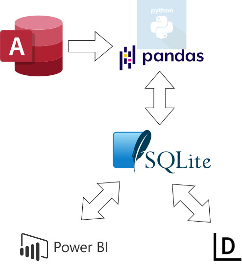

Publikus NEAK adatok feldolgozása 2006 - 2022
2022. október 3.
Technológiai demonstrátor tanulmány-projekt az on-line elérhető publikus, támogatott gyógyszer-forgalmi adatok könnyebb feldolgozására és bemutatására Power BI illetve Datawrapper adat-vizualizációval.
Az elemzés Power BI-ban készült, ábrákkal ellátott változata PDF formátumban elérhető itt: Processing_2006-2022_neak_publ_data.pdf
Domain-tudás
Magyarországon a gyógyszertárakban lehet (elsősorban) gyógyszerekhez jutni. A gyógyszertárak alapvetően 4 fajta terméktípust forgalmaznak (a patikák tevékenysége részletesen szabályozott, lásd, pl. www.hgysz.hu oldalon "Magyar jogszabályok"):
- vannak az egyéb termékek (étrendkiegészítők, vitaminok, gyógy-kozmetikumok, kötszerek, vérnyomásmérők, vércukormérők, pelenkák, betétek, stb.);
- vannak olyan gyári gyógyszerek, amelyeket saját magunk döntése alapján veszünk be (pl. egy fejfájás esetén), ezek az un. OTC-("over the counter") (vény nélküli) -készítmények;
- vannak olyan gyári gyógyszerkészítmények is, amelynek a szedését az orvos rendeli el vényen: ezek az (Rx), azaz vényes gyógyszerek;
- vannak végül olyan készítmények, amelyeket a patika saját maga állít elő és csomagol (magisztrális készítmények).
Ez az utóbbi 2 csoportba tartozó vényes (gyári illetve magisztrális) készítmények egy részének (nem ritkán igen magas) árához az állam TB-támogatást nyújt, így a betegek nem piaci áron juthatnak hozzá. A támogatott gyógyszerforgalom minden esetben vényes, hiszen a támogatás csak érvényes vénnyel vehető igénybe. Egy jó áttekintés erről olvasható az NNK (egeszsegvonal.gov.hu) "Gyógyszerek ártámogatása" oldalán. Ne feledkezzünk meg a közgyógyellátásról sem, amely nem egészségbiztosítási, hanem szociális fogalom, de végső soron ez a rovat is állami költség.
A gyógyszerek árához nyújtott támogatás igénylése és kezelése éves szinten többszáz milliárd forintot mozgató pénzügyi folyamat (közfinanszírozás), amelynek adatfeldolgozási háttere is részletesen szabályozott (lásd "BÉVER-elszámolás" a neak.gov.hu oldalon).
A NEAK (Nemzeti Egészségbiztosítási Alapkezelő) havi rendszerességgel riportokat készít ezen (közfinanszírozási elszámolások) alapján és közzéteszi honlapján ("Publikus forgalmi adatok, elemzések > Gyógyszer"). Ezen MS-Access illetve dBase formátumú riportokon keresztül lehetséges áttekintést nyerni a mindenkori TVGY (magyar Támogatott Vényes Gyógyszerpiac) méretét és folyamatait.
Jelen tanulmány magánvéleményt fogalmaz meg.
Egységes gyógyszerforgalmi idősoros adatbázis kialakítása
A gyógyszer (köz-)finanszírozásról havi felösszegzett tény-adatokat a NEAK (és elődje az OEP) régebb óta tesz közzé:
- a 2003-2005 közötti időszakról elérhető források .PDF formátumban tölthetők le, feldolgozásuk nem vállalható;
- a 2006-tól napjainkig terjedő időszakban viszont könnyedén feldolgozható, dBase III illetve MS-Access formátumban (is) publikáltak adatokat.

Kép forrása: draw.io
A lakossági gyógyszerellátás idősoros volumenadatai méltán tartanak érdeklődésre számot. Ez a havi szinten kiadott felösszegzett riportok feldolgozásával lehetséges.
Azonban 16 év havi bontású adathalmaza kezelhetetlen számosságú file-t jelent, ezért szükséges használhatóbb állapotba
hozni az adathalmazt: kisebb erőforrásigényű adatbázismotor és havi partíciók helyett éves táblák alkalmazása ésszerűnek tűnik. Fontos szempont még a Jupyter / Pandas illetve a Power BI könnyű elérhetőség biztosítása is. Ezért az SQLite 3 környezetet választottam.
Python / Jupyter környezetben Pandas, Numpy, PyODBC,SQLite3 és OS csomagok segítségével egy áttöltő alkalmazást fejlesztettem, amely naplózza az MS-Access olvasást és az adatbázis írást. Az adatokat havi helyett éves partíciókba rendeztettem.
Az adatfeldolgozást lásd a GITHUB
tom1964h/neak_pharma_statistica repository-ban.
Különlegessége ennek a munkának, hogy 2 verzióban készült. A cikk elején és végén található linken letölthető a tanulmány .PDF formátumú változata is, amely Power BI-ban készült. A teljesebb, bővebben szövegezett HTML-verzió ebben a blogposztban olvasható, ahol DataWrapper diagrammokat használtam. Az ábrán a Datawrapper adatforrása nem közvetlenül az SQLite adatbázis volt, hanem egyedi Pandas .csv exportokon keresztül valósult meg az adatáramlás. A blokkdiagram a draw.io oldal segítségével készült.
A 12 éves gyógyszer-forgalmi adatsor néhány paramétere
| Eddig feldolgozott rekordszám |
24004585 |
| Első feldolgozott év |
2006 |
| Aktuálisan feldolgozott folyó év |
2022 |
| Utoljára feldolgozott időszak |
2022 augusztus |
| 17 év alatt eddigi legnagyobb havi forgalom [milliárd Ft] |
59,174 |
| 17 év alatt eddigi legkisebb havi forgalom [milliárd Ft] |
31,806 |
| 17 év alatt átlagos havi forgalom [milliárd Ft] |
40,011 |
| Utoljára feldolgozott időszak forgalma [milliárd Ft] |
51,283 |
Az elmúlt időszakban erősen rekordközeli havi támogatott gyógyszerforgalmat láttak el a hazai patikák. Az állandó néhány százalékos éves növekedés 2013 óta megszokottá vált.
Az ábrán fentről lefelé 2006-tól 2022-ig vannak az éves támogatott forintforgalmak megjelenítve. A sötétkék sávok a lakosság által vényekre kifizetett költséget mutatják milliárd forintban, a világosabb kék jobboldali sávok az állam költését ugyanebben az évben milliárd forintban (ebben a TB-támogatás és a közgyógyellátásra fordított összeg is benne van). A két sáv együttes összege az éves bruttó támogatott gyógyszerforgalmat adja ki. Az az összeg évek óta emelkedő tendenciát mutat, egyre hosszabbak a sávok.
A CALC2022 sáv azt jelenti, hogy az idei első 8 havi összegekből aránypárral (12/8-ad) számolam az éves várható (valószínű) végösszegeket. Időarányosan tehát az éves kalkulált lakossági költés 142,6 milliárdra adódik, az állam költsége várhatóan 448,3 milliárdon áll meg.
Forint forgalom: a beteg-térítési díjak és az állam költségének éves alakulása
A 2006-tól kezdődő 17 évados adatsort az évről évre következő százalékos változások ábrázolásával jellemzem a lakossági vényes gyógyszerköltség (sötétkék vonal) illetve az állam gyógyszerköltése (világoskék vonal) tekintetében. A költségnemek többé-kevésbé egyformán változnak, azonban van két említésre méltó momentum:
- 2007-ben (költségvetési okokból) jelentősen visszavágták a TB-támogatás mértékét, az új rendszer hatását jelzi a lakosság ugrásszerű költségnövekedése (+13,93%) és az állami megtakarítás (-17,9%)(a lakosság járt rosszabbul); megmutatkozik a 2008-as korrekciók hatása is, hiszen 2008-ra a lakosság -5,08 %-os költségcsökkentést realizálhatott, míg az állam költségnövekedése 4,49 % volt;
- a 2012-es évben kiteljesedő (költségvetési okokból indított) generikus program és licit rendszer ugyancsak költségcsökkentést hozott bizonyos nagy költségű terápiák átcsoportosítása mellett: állami oldalon majdnem háromszor akkora hatással, mint a lakosság esetében (-17,47% versus -6,19 %).
Az utolsó 10 évben működtetett gyógyszertámogatási rendszer jó irányítottságát és fegyelmezett végig-vitelét mutatja a költségek éves szinten csupán néhány százalékos változása.
A vényes dobozforgalom éves alakulása 2006-tól
A vényen kiadott gyógyszerek éves dobozforgalmi mutatójának alakulása az előző ábra alatti folyamatok mentén alakult: 2007-ben a megszorítások hatására jelentősen csökkent a kiadott dobozok száma (-12,6%), míg 2009-re a korrekciók növekedést hoztak (+11,83 %). Az ábra nem mutatja, de a 17 évad alatt a legnagyobb dobozforgalom 2006-ban volt (224,6 millió dobozzal), 2009-ben volt a második csúcs, 211 millió dobozzal. A 2018-tól kezdődő időszakban a csökkenés több okra is visszavezethető:
- a változó korösszetétel, a fokozatosan öregedő népesség megváltozott gyógyszerezési igényeket támaszt; a jelen az, hogy a Ratkó-korszak generációja nyugdíjas korú, jelentős gyógyszerforgalmat generálva; de ha rátekintünk a KSH-korfára, akkor kitűnik, hogy a másik nagy népességi csúcs a jelenleg negyvenes éveiben járó GYES-es korosztály, amely 19 év múlva éri el a nyugdíjkorhatárt;
- a meghonosodó újabb gyógyszerek, terápiák jellemzően drágábbak, kisebb logisztikával,
- a koronavírus járvány a gyógyszerpiacnak sem kedvezett, jelentős kereslet-ingadozások voltak,
- a számos hiánycikk sem javít a helyzeten, mert egyszerűen nem tudnak helyette mást venni a betegek, inkább nem szedik azt a készítményt.
Az egyes hatástani főcsoportok forint forgalmának változása 2006 és 202208MAT között
A hatástani felosztás alatt ATC1 főcsoportokat értek. A továbbiakban két módon szeretném megvizsgálni, hogyan változott egyes csoportok forgalma 17 évad alatt:
- ATC1 hatástani főcsoportok szerint, melyek a nagy vesztesek és a nagy nyertesek, forintálisan és dobozforgalomban egyaránt;
- megyei bontásban, vannak-e nagy eltérések a megyék között, forintálisan és dobozforgalomban egyaránt
Az ábrán a forintforgalom szerinti erősorrend fentről-lefelé követhető, a 2006-os év forint-forgalmának megfelelően (legfelül a legnagyobb 2006-os forgalmú "C" (kardiovaszkuláris) készítmények állnak akkor 154 milliárdos éves forgalommal. A nyíl balra mutat ebben a sávban, mellette a -35,5 %-os érték azt jelzi, hogy a "C" csoport forgalma 17 év alatt ekkora veszteséget szenvedett, 99 milliárdosra olvadt 2022 08 MAT időszakra. Ezzel idén már csak a harmadik helyre szorult vissza. Az eltelt időszaknak vannak nyertesei és vesztesei:
- az időszak legnagyobb nyertesei az "I", az "L", a "V" és a "B" csoportok:
- az "I" (= ismeretlen) csoportba az ATC-rendszerbe be nem sorolt támogatott forgalmak találhatók meg, azaz pl. magisztrális és a be nem sorolt készítmények; a nagy növekedés oka az elszámolás változása, 2006-ban ebbe a csoportba más termékeket soroltak, mint 2022-ben: idén a 8 milliárdos forgalom döntő része orvosi oxigén volt; ez az érték műtermék, hiszen a 2022-es dobozforgalom 43628 %-os növekedést mutat :-)
- a legnagyobb valódi fejlődést mutató csoport az "L" (daganatellenes és immunmodulátor) készítmények; ebben a csoportban az új terápiák meghonosításával 36-ról 106 milliárdra növekedett a forgalom, elsősorban az "L01" (daganatellenes) szerek növekvő mértékű alkalmazása miatt; 96%-os növekedés, miközben a dobozforgalom csak 15 %-kal magasabb idén mint 2006-ban (részletes táblázatot lásd itt);)
- a "V" (minden egyéb terápiás) készítmények forgalma 8,5 milliárdról 19,9 milliárdra nőtt 2022-re (134 %), elsősorban a támogatott gyógytápszerek miatt (részletes táblázatot lásd itt); érdekesség, hogy a csoport dobozforgalma ezen időtávon 43,5 %-ra esett vissza;
- a "B" (vér és vérképző szerek) csoport forint-forgalma 122 %-ra nőtt 2022-re, miközben az eladott dobozmennyiség is 35%-kal több 2022-ben, mint 2006-ban - a megváltozott terápiás gyakorlat és az új eljárások eredményeképpen (részletes táblázatot lásd itt);
- az eltelt időszak egy nagy és több kisebb vesztest is hozott:
- bár százalékosan csak második legnagyobb csökkenést mutatja, méretében a (2006-ban) legnagyobb csoportja a "C" (kardiovaszkuláris) szerek forint-forgalma 154-ről 99 millárdra esett vissza 2022-re, miközben a csoport dobozforgalma 11,5 %-kal csökkent; a terápiás ajánlások megváltozása, a generikus program, a populáció változása mind-mind okai lehetnek a szív-érrendszerre ható szerek általános forgalom-csökkenésének (általánosan, mert pl. a vérnyomáscsökkentők forgalma mindeközben nőtt (részletes táblázatot lásd itt);
- százalékban a legnagyobb veszteséget (-44,8 %-ot) könyvelhetik el az "M" (váz- és izomrendszer) szerei: 32-ről 17 milliárdra csökkent a forgalmuk 2022-re, a dobozforgalmuk 43,1 %-ot csökkent (igaz, mindeközben a köszvényellenes szerek forgalma viszont nőtt!) (részletes táblázatot lásd itt);
- a "D" (bőrgyógyászati) készítmények forgalmában 39 %-os visszaesést figyelhetünk meg, 9,2-ről 5,6 milliárdra csökkent a csoport forint-forgalma (mindez dobozban 58 %-os esést jelent); igaz, a pszoriázis-elleni és az egyéb bőrgyógyászati szerek forgalma nőtt
(részletes táblázatot lásd itt);
- a negyedik csoport, a "J" (szisztémás fertőzésellenes szerek) forgalma a 2006-os 30 milliárdról 2022-re 24 milliárdra olvadt, -21,3 %-os eséssel; a csoport forgalmán belül a mikobaktérium és a vírusellenes szerek forgalma viszont megnőtt; a "J" csoport dobozforgalma ugyanebben az időszakban 40,1 %-kal lett kisebb (részletes táblázatot lásd itt).
Az egyes hatástani főcsoportok dobozforgalmának változása ugyanebben az időszakban
Az előző fejezetben láttuk, hogy milyen nagymértékű átalakulások mentek végbe a támogatott gyógyszerpiacon 17 évad alatt. Most az is érdekes lehet, hogy a milyen a forintösszegek mögötti anyagi háttér:
Ez a sávos ábra hasonlít az előzőre annyiban, hogy a 2006-os erősorrend szerint fentről lefelé haladva láthatók az egyes sávokban a gyógyszercsoportok dobozforgalmai. Itt nem nyilak, hanem kétgömböcös egyenesek láthatók: a szakasz hossza a változás nagyságát mutatja; a világoskék gömböc a 2006-os tényadatot, a sötétkék gömböc a 2022 08 MAT tényadatot jelöli; a sávok melletti százalékos érték pedig a változás irányát és nagyságát jelzi:
- az "I" (ismeretlen) csoport fejlődését most ne nézzük, a növekedést csupán a "B", az "A" és a "H" csoportok mutatnak;
- az összes többi csoport dobozforgalma csökkent, volt ahol 58 %-kal, de sok csoport van, ahol kevesebb, mint a kétharmadára esett vissza a dobozforgalom.
A támogatott gyógyszerforgalom változása 2006/2022MAT időszakok között megyei bontásban
A támogatott gyógyszerforgalom 2006 / 2022 08 MAT közötti változása területileg nem egyenletesen oszlik meg:
- messze a legnagyobb mértékben Pest megye éves forgalma nőtt, 44 %-kal 45-ről 65 milliárd forintra; egyedüli Pest megye abban is, hogy a dobozforgalom is csak ebben a megyében növekedett, 4,41 %-kal (minden más megyében csökkent a dobozforgalom);
- 25 %-on felüli mértékben növekedett még Győr-Moson-Sopron, Szabolcs, Hajdú-Bihar, Vas és Csongrád-Csanád megye;
- a többi megyék (és Budapesté is) forgalma ennél kisebb mértékben növekedett, a sereghajtó Békés megye 5,7 %-os növekedéssel.
Vannak-e eltérések az egyes megyék között a dobozforgalom tekintetében 2006/202208MAT időszakban?
Jelentősen. Az ország dobozforgalom tekintetében is két részre osztható:
- egyrészt van a Pest megye, ahol nőtt a dobozforgalom 4,41 %-kal, és
- másrészt van az összes többi, ahol csökkent (Budapest járt a legrosszabbul, itt 24,71 %-kal esett vissza a dobozforgalom).
Két elemzés a teljes gyógyszerkincs két kiválasztott területéről
Már az előző, COVID-pandémia hatásaival foglalkozó elemzésemben is megmutatkozott, hogy a ATC "J" (szisztémás fertőzésellenes) szerek csoportjának forgalma erősen időfüggő. Ezért érdemes ezen főcsoporton belül keresni demonstrativ folyamatokat.
A J01 szisztémás antibakteriális szerek csoportja ilyen intenzíven változó halmaz, amelyen bemutatom, milyen nagy változások történhetnek 17 évad alatt. A 2006-ban 21,6 milliárdos J01-piac 2022 01-08 időszakban 7,4 milliárdosra zsugorodott (egyharmadára). Ebben
nemcsak a COVID-pandémia játszott szerepet, de a generikus program is sikeresen csökkentette a forint-forgalmat. A csoportba 24 hatóanyag-család tartozik, ezek közül csak a 6 legnagyobb forgalmú (TOP6) csoportot veszem most elő.
Az antibiotikumokhoz képest is intenzívebb változásokat mutat és pénzügyileg is nagyobb hatású az "L" (daganellenes és immunmoduláns) gyógyszercsoport. Ebben a körben az évek alatt számos új terápia honosodott meg. Mutatja ezt a szegmens növekedése is, 17 évad alatt 13,7 milliárdról 106,3 milliárdra, 676 %-os növekedést mutat.
TOP6 antibakterális hatóanyagcsoport forintforgalma
A diagram jelmagyarázata szerint balról-jobbra haladva:
- Az eredetileg 2006-os második helyezett, 4,7 milliárdos forgalmú J01CR (béta-laktám kombinációs) csoport kevesebb, mint a fele forgalommal, 2,1 millárd forintos piaccal idén első helyre érkezett meg.
- A 2006-ban negyedik helyezett J01DC (2.generációs cefalosporin) csoport 3 milliárdos forgalma idén 822 milliósra apadt, többször helyet cserélve a 3.generációs cefalosporinokkal
- Az ötödik helyet a J01DD (3.generációs cefalosporinok) idén is megtartották, igaz a forgalmuk 1,5 milliárdról "leharmadolódott".
- A 2006-ban csoportvezető 5,1 milliárdos forgalmú J01FA (makrolid antibiotikumok) csoport forgalma 2022-re, idénre 1,9 milliárdosra csökkent, régen elvesztve vezető szerepét.
- A J01MA (kinolon-csoport) forgalma is harmadolódott, 3,7 milliárdról 1 milliárdra csökkent mérettel - egy időben sztárok voltak
- A hatodik helyezett csoport, a J01FF lincosamid antibiotikumok csoportja maradt idén az ezen a helyen, forgalma megfeleződött, 880 millóról 400 milliósra esett.
- Az összes többi antibiotikum hatóanyag forgama a "J01REST" csoportba van összegezve. Ez a maradék-halmaz forgalma 2006-ban 2,8 milliárd forint, 2022 01-08 hónapban kicsivel több, mint 500 millió forint volt.
ATC "L" szerek támogatott gyógyszerpiaca évenként 2006 - 2022 08 MAT időszakokban
AZ "L" csoport esetében ellenkező irányban történtek a sokkal nagyobb átalakulások:
- a szegmens - eredetileg - vezető csoportja az L02 (endokrin terápiás) gyógyszerek a 2006-os 14,8 milliárdról visszaestek a 3.helyre és a forgalmuk is 9,8 milliárdra csökkent;
- az eredetileg második helyezett L03 (immunstimulánsok) forgalma 7,5 milliárdról kis csökkenéssel 6,8 milliárdra esett vissza, de ez már az utolsó helyet jelenti ebben a kategóriában;
- a kategóriában meghonosodó új terápiák elsősorban az L01 daganatellenes szerek közül kerültek ki; világosan mutatja ezt, hogy a 2006-ban 7,1 milliárdos forgalmuk várhatóan 62 milliárdosra nő, ami majdnem 9-szeres érték;
- az "L" csoport 2006-ban legkisebb forgalmú tagja, az L04 (immunszupresszív) szerek csoportja szintén számos új terápiával gazdagodott 2006 óta (a szervátültetések növekvő száma miatt): 2011-ben az eredetileg 6,5 milliárdos csoport forgalma elérte a 29,2 milliárd forintot; bár az immunszupresszánsok alkalmazása időközben visszaszorult, idén is a második legnagyobb forgalmú csoportnak számít 27,5 milliárdos várható forgalommal.
Az elemzés Power BI-ban készült, ábrákkal ellátott változata PDF formátumban elérhető itt:Processing_2006-2022_neak_publ_data.pdf
Ezúton is szeretnék köszönetet mondani Nagy-Rácz Istvánnak, aki jótanáccsal és iránymutatással segített tanulmányaim és ezen fejlesztés során is.
Jelen tanulmány magánvéleményt fogalmaz meg.
Indexkép forrása: https://www.stockvault.net/photo/210039/mirror-effect#